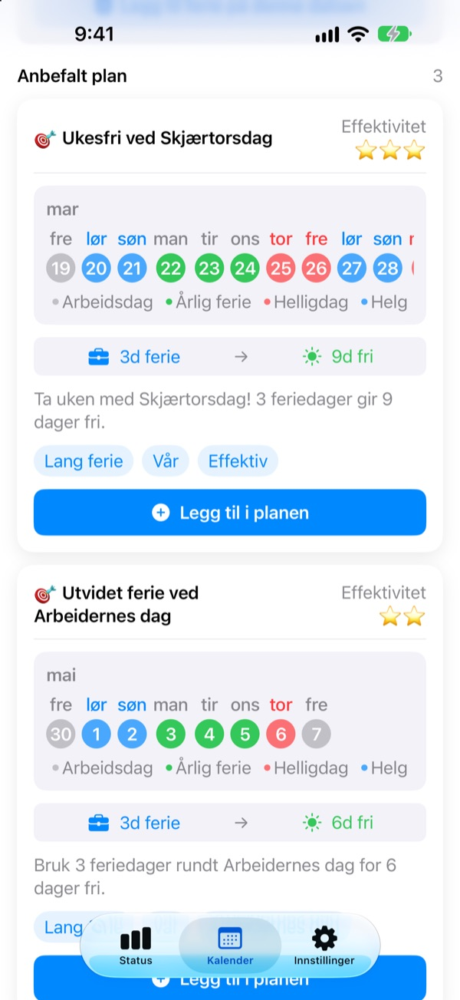
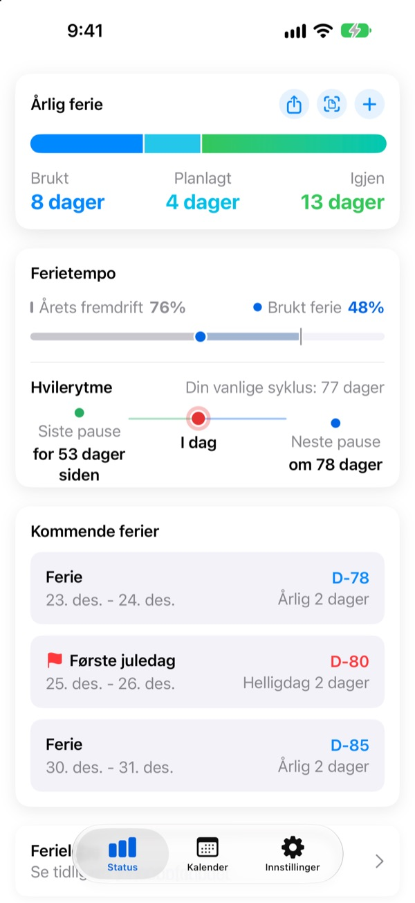
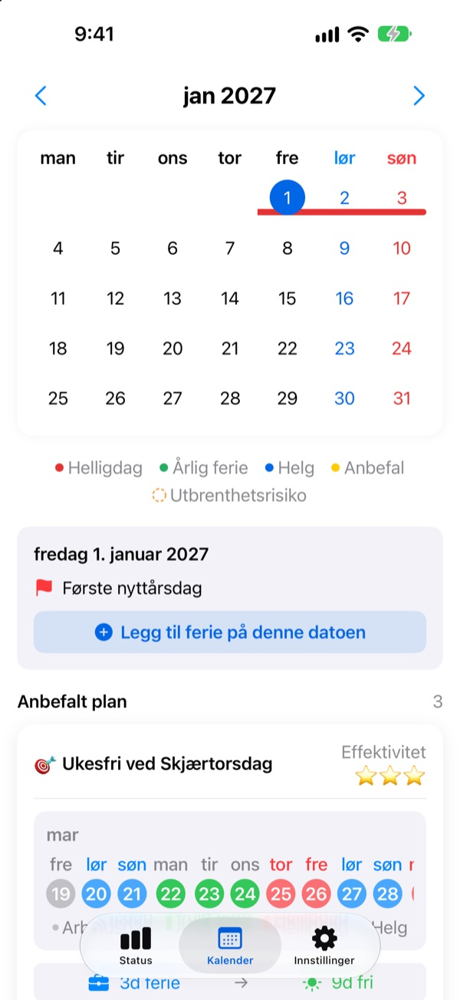
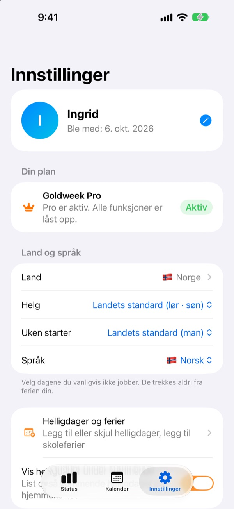

Få feriedager,
lang fri
Goldweek kobler helligdager og helger og viser nøyaktig hvilke dager du bør ta fri for å ha lengst mulig fri. Slutt på å bla i kalenderen og telle.
Gratis å laste ned. Ferieoversikt og forslag er fortsatt gratis.

Hvor langt rekker feriedagene dine?
Velg hvor mange dager du kan ta fri. Du ser de lengste friperiodene de gir rundt de neste helligdagene.
Lei av å telle dager i kalenderen?
Torsdag er helligdag, skal du ta fri fredag? Eller spare dagen til langhelgen neste måned? Etter nok blaing tar du fri en tilfeldig dag, og i desember forsvinner feriedagene som ble til overs. Goldweek regner for deg og viser dagene som får ferien til å strekke seg lengst.
Ferien din på ett blikk
Totalt, brukt og igjen på én skjerm. Ved siden av ser du hvor langt året har kommet og hvor mye ferie du har brukt, så du straks ser om du sparer for mye.
Gjenstående dager og kommende fri vises i en widget på Hjem-skjermen.

Legg inn fri rett i kalenderen
Helligdager, ferie og foreslåtte inneklemte dager vises i farger i kalenderen. Trykk på en dato for å legge til eller endre fri, også halve dager, kvarte dager eller timer.
Tidligere ferie henter du inn på én gang fra et bilde av HR-skjermen.

Ditt land, din arbeidstid
Helligdager i 42 land, fra Norge og Norden til Europa, Asia og Amerika. Der helligdagene varierer etter region, velger du din. Mangler landet ditt? Legg inn egne helligdager.
Du kan også velge helgedager, første dag i uken og om du jobber fast, deltid eller skift.

Kom i gang på tre steg
- 1
Si hvor du jobber
Første gang velger du land og hvor mange feriedager du har i året.
- 2
Velg et forslag
I fanen Kalender finner du foreslåtte friperioder. Legg til dem du liker.
- 3
Før opp ferien din
Trykk på en dato eller hent inn tidligere ferie fra et bilde.
Slik regnes det
- Hel dag
- 1 dag fra saldoen
- Halv dag
- 0,5 dag
- Kvart dag
- 0,25 dag
- Timer
- Etter arbeidstimene dine den dagen
- Sykdom, velferdspermisjon, tjenestereise
- Trekkes ikke fra ferien
- Bonusferie
- Ekstra fridager som avspasering, føres for seg med utløpsdato (Pro)
Antall feriedager i året og måneden ferieåret starter, kan du endre når som helst i Innstillinger.
God hvile er gratis. Planleggingen tar Plus og Pro seg av.
Gratis
- Hele, halve og kvarte dager og timer, med gjenstående ferie
- Helligdager i 42 land, egne helligdager og ferier
- Se alle forslag for i år, legg til opptil 3
- Tips om hvileintervaller, påminnelser og widget
- Legg til ferie fra et bilde
- iCloud-sikkerhetskopi og delt plan med familien
Plus og Pro
- Plus: Optimal årsplanlegger
- Plus: Ubegrenset med forslag, også for i fjor og neste år
- Plus: Send fri til Kalender-appen
- Pro: Alt i Plus, bonusferie, årsgrenser og overføring per type
- Pro: Importer skolerute og gjenkjenn kalender automatisk
- Pro: Fri sammen og familiens merkedager
Hvert nivå finnes som årsabonnement eller engangskjøp for alltid.
Årsabonnementer fornyes automatisk hvis de ikke slås av senest 24 timer før perioden er over. Administrer dem når som helst under Innstillinger > Apple-konto > Abonnementer.
Vanlige spørsmål
Feriesaldoen stemmer ikke.
Sjekk i Innstillinger hvilken måned ferieåret starter og hvor mange feriedager du har totalt. Halve (0,5) og kvarte dager (0,25) trekkes automatisk, og typer som ikke teller, som sykdom, velferdspermisjon eller tjenestereiser, endrer ikke saldoen. Stemmer det fortsatt ikke, send oss en e-post.
Ferien min vises ikke i kalenderen.
Avlyst ferie vises ikke i kalenderen. Sjekk statusen på oppføringen i Feriehåndtering. Å oppdatere til nyeste versjon kan også hjelpe.
Hvordan legger jeg inn bonusferie?
Trykk på + i fanen Status for å åpne Feriehåndtering, og bruk delen Bonusferie nederst. Velg type (avspasering, belønningsfri, påfyllsferie …), antall dager og eventuelt en utløpsdato. Bonusferie føres for seg, adskilt fra vanlig ferie.
Jeg har betalt, men ingenting er låst opp.
Trykk på Gjenopprett kjøp nederst i fanen Innstillinger. Kjøpet gjenopprettes med Apple-kontoen du er logget på App Store med. Hjelper det ikke, send oss en e-post.
Mister jeg dataene om jeg sletter appen?
Dataene ligger på enheten, så sletter du appen, forsvinner de. Slå på iCloud-sikkerhetskopi for å ha en kopi du kan gjenopprette senere.
Kan jeg legge til egne helligdager eller skjule noen?
Ja. Under Helligdager og ferier i Innstillinger legger du til egne helligdager eller skjuler standardhelligdager.
Hvilke land støttes?
Goldweek har helligdagene til 42 land. Velg land i Innstillinger (og region der helligdagene varierer), så oppdateres kalenderen med en gang. Mangler landet ditt, kan du legge inn helligdagene selv eller ønske det via tilbakemelding i appen.
Hvor lagres dataene mine?
Det du skriver inn, blir på enheten eller i din egen iCloud. Vi mottar bare anonym bruksstatistikk, anonyme krasjrapporter og tilbakemeldinger du selv velger å sende.
For alt som ikke er besvart over, ideer eller feil, skriv til leeo@kakao.com. Vi svarer som regel innen én til to virkedager.